2026 상급병원 합격 가이드 오픈
기업면접·병원취업·임용 코칭 전문
세브란스·서울성모·삼성서울 등 상급종합병원 간호사 채용은 경쟁률 30:1 이상. 인성면접·상황제시·직무지식 세 축을 모두 잡아야 합니다.
세브란스·삼성서울·서울성모 등 병원별 실제 기출 문항과 출제 경향 분석. 지원 병원에 맞춘 맞춤 준비 전략을 제공합니다.
상황제시 면접의 핵심인 SBAR 보고 프레임워크 훈련. 낯선 임상 상황에서도 구조적으로 답변하는 능력을 기릅니다.
천편일률 지원동기를 탈피하고 나만의 간호 가치관과 경험 스토리를 연결해 면접관의 기억에 남는 답변을 완성합니다.
환자 돕고 싶다, 간호사가 꿈이었다… 면접관은 하루에 수십 명의 같은 답변을 듣습니다.
낙상·투약오류·보호자 컴플레인… 실무 경험 없이 어떻게 답해야 할지 막막합니다.
아는 내용도 면접장에서 잊어버리고, 면접관 눈을 마주치기가 무섭습니다.
지원동기, 간호사를 선택한 이유, 어려운 상황에서의 대처방식 등 가치관과 성격을 묻는 유형입니다.
실제 임상에서 발생할 수 있는 상황을 제시하고 어떻게 대처할지 묻는 유형입니다. SBAR 구조 필수.
학교에서 배운 이론적 지식을 면접에서 언어로 설명하는 능력을 평가합니다.
상급종합병원에서 도입 중인 PT 발표 및 그룹 토론 면접. 논리적 사고와 소통 역량을 평가합니다.
요양병원·의원·재활병원 간호조무사 면접은 환자 중심 케어 마인드와 팀 협업 역량이 핵심입니다. 직종 특화 코칭으로 첫 면접부터 합격을 노립니다.
요양병원·의원·재활센터는 채용 포인트가 다릅니다. 지원 기관의 특성에 맞는 면접 전략을 개인화해 드립니다.
낙상 예방·욕창 관리·투약 보조 등 실제 업무 시나리오 기반 상황면접 답변 훈련으로 면접관 신뢰를 얻습니다.
자격증 취득 과정, 실습 경험, 봉사활동을 연결해 나만의 설득력 있는 지원동기와 강점 스토리를 완성합니다.
신규 지원자의 경우 경력이 없다는 약점을 어떻게 강점으로 바꿀지 모릅니다.
요양병원, 의원, 재활센터 각각 무엇이 다른지, 나에게 맞는 곳이 어딘지 감이 안 옵니다.
"어려운 환자를 만나면 어떻게 하겠냐"는 질문 앞에 아무 말도 못 합니다.
간호조무사로서의 케어 마인드, 이 기관에 지원한 이유, 어려운 상황에서의 대처방식을 묻습니다.
낙상 환자 발견, 욕창 관리, 보호자 민원 등 실제 케어 상황에서의 대처를 묻습니다.
"우리 기관에 대해 아는 것을 말해보세요" — 기관 유형 이해도가 합격을 가릅니다.
신규로서 어떻게 성장해 나갈 것인지, 3년 후 모습을 묻는 질문에 구체적으로 답해야 합니다.
의료기사 직종은 전공 지식과 임상 역량을 모두 검증합니다. 각 직종별 면접 특성에 맞춘 전문화된 코칭으로 합격을 이끕니다.
혈액·세포·미생물 검사 실무 역량과 긴급 검체 처리 상황에 대한 구조적 답변 훈련을 제공합니다.
CT/MRI/X-ray 포지셔닝 지식과 방사선 방어 프로토콜 관련 전공 면접 문항을 집중 대비합니다.
재활 치료 계획 수립 능력과 환자·보호자 설명 역량을 면접에서 효과적으로 전달하는 방법을 코칭합니다.
시험 공부는 했지만 면접에서 전공 질문이 나오면 완전한 문장으로 말하기가 어렵습니다.
상급종합병원, 종합병원, 병의원 각각 면접 포인트가 어떻게 다른지 파악하기 어렵습니다.
의사·간호사와의 협업 경험이 부족한 신입으로서 팀 역량을 어떻게 증명해야 할지 막막합니다.
병원행정직은 의료 지식 + 고객서비스 + 전산 역량을 동시에 검증합니다. 원무·보험청구·EMR 관련 실무 질문 대비로 차별화된 합격을 이끕니다.
DRG·행위별수가·본인부담금 등 보험 청구 기초 개념 질문에 자신있게 답하는 방법을 훈련합니다.
보호자 민원·대기시간 불만·수납 오류 등 실제 원무 상황을 시뮬레이션해 응대 역량을 입증합니다.
지원 병원의 진료과 구성, 규모, 특화 분야를 사전 분석해 지원동기와 연결. 면접관이 원하는 답변을 만듭니다.
EMR, 보험청구 소프트웨어를 다뤄본 적 없는데 관련 질문이 나올까봐 불안합니다.
의료계에서 왜 임상직이 아닌 행정직을 선택했는지 면접관을 납득시키기 어렵습니다.
화난 보호자, 응급 상황의 대기 관리 등 실제 응대 경험 없이 답변하는 방법을 모릅니다.
| 비교 항목 | 빅링커 코칭 | 혼자 준비 |
|---|---|---|
| 면접 전략 | 직종 · 병원 맞춤 개인화 전략 | 일반적인 공통 전략 |
| 모의면접 | 1:1 반복 모의면접 + 즉각 피드백 | 혼자 거울 보며 연습 |
| 기출 문항 | 병원별 · 직종별 기출 DB 제공 | 인터넷에서 단편 정보 수집 |
| 임상 시뮬 | 실제 상황 시나리오 반복 훈련 | 경험 없이 텍스트로만 준비 |
| 합격률 | 91% (수강생 기준) | 낮은 합격률 + 재지원 반복 |
실제 채용 현장에서 지원자를 평가했던 전직 병원 인사팀이 합격자와 탈락자를 나누는 기준을 직접 코칭합니다.
세브란스·서울성모·삼성서울·고려대·한양대 등 상급종합병원 기출 문항 800건 이상 보유. 실전과 같은 환경에서 연습합니다.
간호사·간호조무사·의료기사·병원행정 각 직종의 면접 특성이 다릅니다. 직종에 맞는 전략으로 1:1 개인화 코칭을 제공합니다.
실제 면접에서 나오는 상황제시·시나리오 질문을 반복 시뮬레이션. 낯선 상황에서도 구조적으로 답변하도록 훈련합니다.
코치의 전문성과 수강생의 합격 소식을 직접 확인하세요.
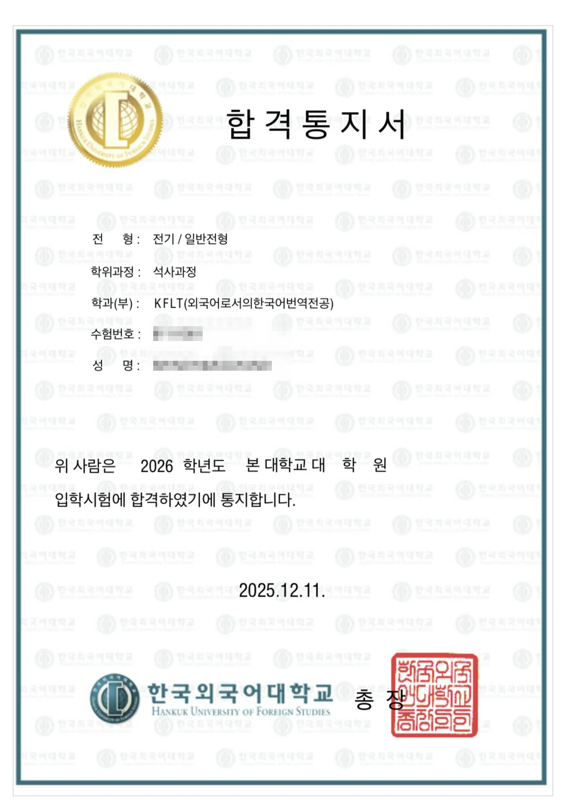


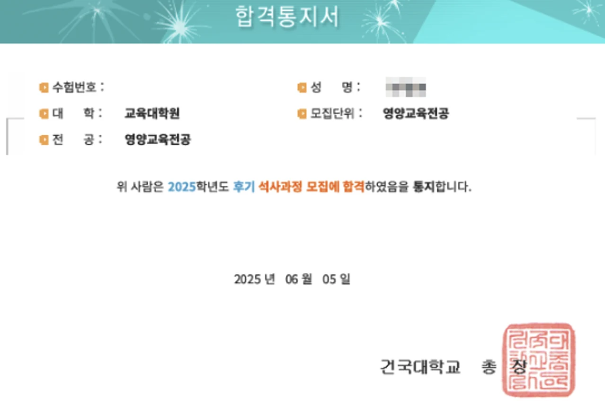
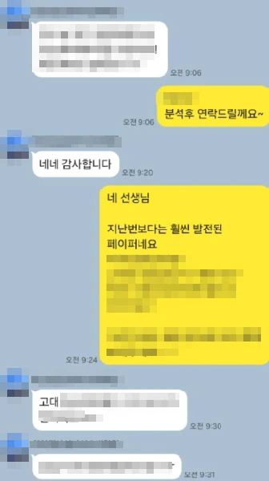
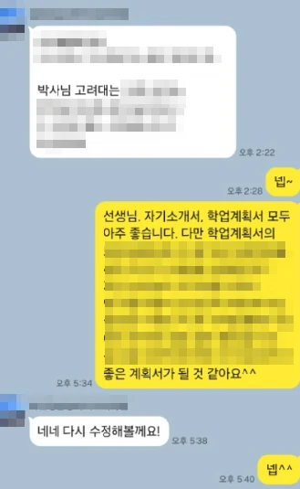
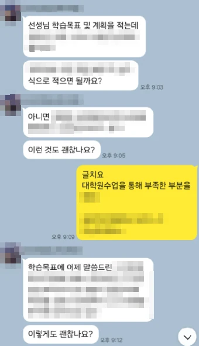
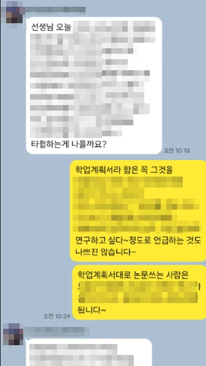
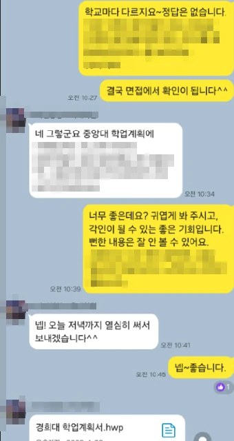
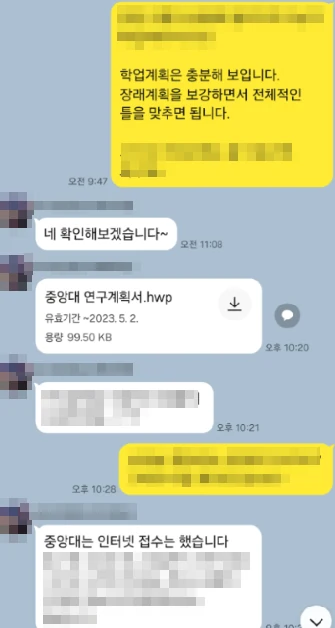
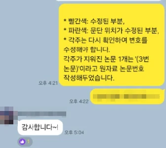
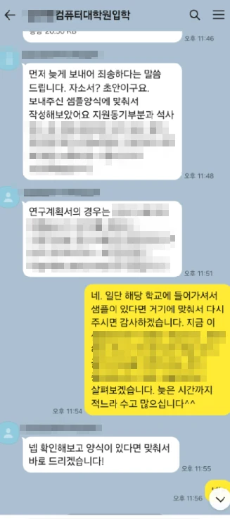
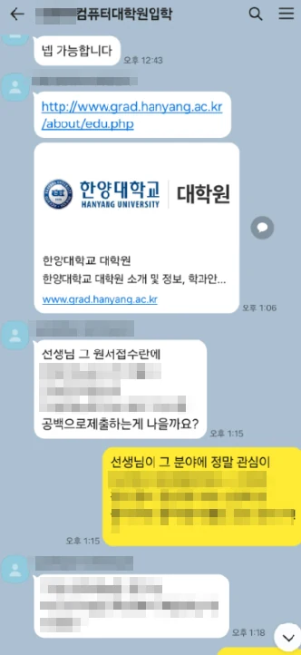
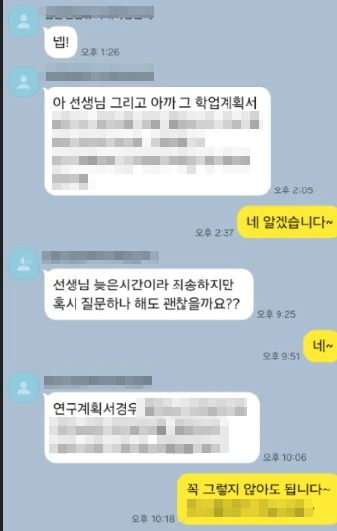
SBAR 보고 구조를 반복 훈련하고, 병원 특성에 맞는 지원동기를 재구성했습니다. 상황제시 면접에서 면접관이 끄덕이는 경험을 했고 최종 합격했습니다.
지원동기가 너무 일반적이라는 피드백을 받고 코칭을 시작했습니다. 가톨릭 병원 특성과 나의 경험을 연결해 완전히 다른 답변을 만들었고 합격했습니다.
실무 경험 없는 신규였지만 실습 경험과 자격증 취득 과정을 스토리로 연결하는 훈련을 했습니다. 상황면접에서 가장 자신있게 답해 합격했습니다.
빅5 병원 합격자들의 진짜 후기를 확인하세요
"SBAR 훈련 덕분에 상황제시 면접이 두렵지 않았어요. 면접관이 고개를 끄덕이는 게 느껴졌습니다."
"지원동기가 '환자를 돕고 싶어서'였던 저를 완전히 바꿔줬어요. 병원 특성과 내 경험을 연결하는 방법을 배웠습니다."
"임상 시뮬레이션 연습이 정말 효과적이었어요. 실제 면접에서 비슷한 상황이 나왔고 자신있게 답했습니다."
"간호조무사로 신규 지원인데 실습 경험을 스토리로 만드는 법을 배웠어요. 면접 분위기가 완전히 달라졌습니다."
"병원별 기출 문항이 실제로 나왔어요. 미리 연습했던 질문이라 침착하게 답할 수 있었습니다."
"방사선사 면접 전공 질문 대비가 정말 꼼꼼했어요. 아는 내용을 말로 잘 표현하는 훈련이 제일 도움됐습니다."
"물리치료사 면접에서 환자 설명 역량 질문이 나왔는데, 연습한 대로 자신있게 답했어요. 합격했습니다!"
"원무과 면접에서 의료보험 질문이 나왔어요. 빅링커 코칭에서 배운 개념으로 자신있게 설명했고 합격했습니다."
"간호사 지원 3번 탈락 후 코칭을 받았어요. 무엇이 문제였는지 명확하게 짚어줘서 이번에 드디어 합격했습니다."
"요양병원 면접이 일반 병원과 다르다는 걸 처음 알았어요. 맞춤 전략 덕분에 첫 번째 지원에서 합격했습니다."
"임상병리사 검체 관련 질문 대비가 정말 체계적이었어요. 면접에서 유일하게 전공 질문에 막히지 않았습니다."
"왜 간호사가 아닌 행정직인지 설명하는 게 제일 어려웠는데, 코칭으로 완벽한 답변을 만들었어요."
"빅5 면접은 다르다는 걸 코칭 받으면서 알았어요. 일반 병원 준비로는 절대 안 됐을 것 같습니다."
"면접 전날까지 모의면접을 해줬어요. 덕분에 실제 면접 당일 가장 편한 마음으로 면접을 볼 수 있었습니다."
"재활병원 물리치료사로 합격했어요. 환자 케어 철학을 면접에서 표현하는 방법을 배운 게 결정적이었습니다."
"원무과 컴플레인 상황 시뮬레이션이 그대로 면접에 나왔어요. 침착하게 대응해서 좋은 평가를 받았습니다."
"간호조무사 1급 취득 직후 바로 코칭을 받았어요. 신규임에도 준비된 지원자로 보였다고 합격 통보를 받았습니다."
"코칭 전에는 면접이 너무 무서웠는데, 10번 이상 모의면접을 하니까 이제 면접이 오히려 기대됩니다."
간호사(RN) 코칭은 빅5·상급종합병원 면접 특화 전략, SBAR 임상 시뮬레이션, 병원별 기출 DB를 중심으로 진행합니다. 간호조무사(NA) 코칭은 요양병원·의원·재활센터 기관 유형별 맞춤 전략, 케어 시나리오 훈련, 자격증 경력 스토리 구성에 초점을 맞춥니다. 두 직종 모두 1:1 개인화 코칭으로 진행됩니다.
네, 가능합니다. 임상병리사·방사선사·물리치료사 등 의료기사 직종과 원무과·의료비서·병원행정직 모두 코칭 가능합니다. 각 직종의 면접 특성과 전공 지식 질문을 사전에 분석해 맞춤 전략을 제공합니다.
세브란스병원, 서울성모병원, 삼성서울병원, 서울대병원 합격자가 있습니다. 위 카카오톡 후기 이미지가 실제 수강생들의 합격 소식입니다. 코칭 신청 시 병원별 합격 사례를 더 자세히 공유해 드립니다.
기본 4주 과정은 진단 1회 → 전략 구성 1회 → 실전 훈련 4~6회 → 최종 점검 1회로 진행됩니다. 면접 일정과 준비 상태에 따라 집중 코스(1~2주)와 단기 특강도 운영합니다. 무료 상담을 통해 최적의 구성을 안내해 드립니다.
네, 전국 어디서나 화상 코칭이 가능합니다. Zoom 또는 카카오톡 영상통화를 통해 대면과 동일한 수준의 모의면접 및 피드백을 제공합니다. 지방 거주자나 바쁜 직장인도 유연하게 일정을 조율할 수 있습니다.